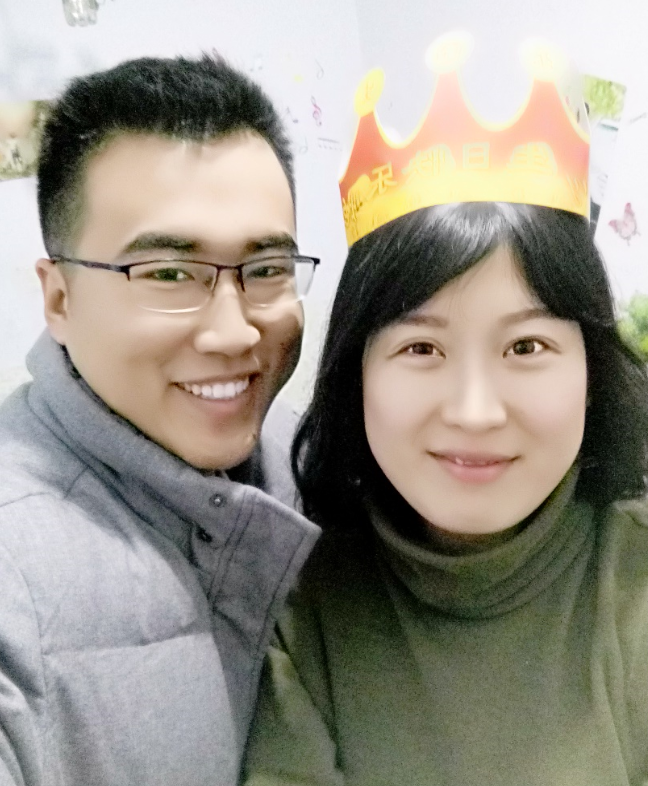
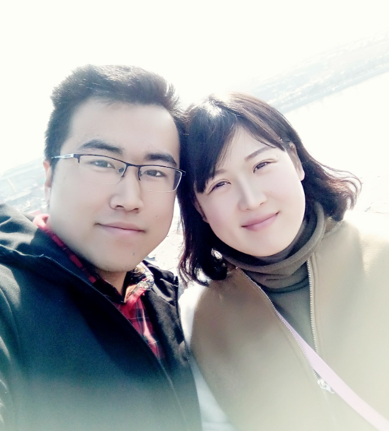
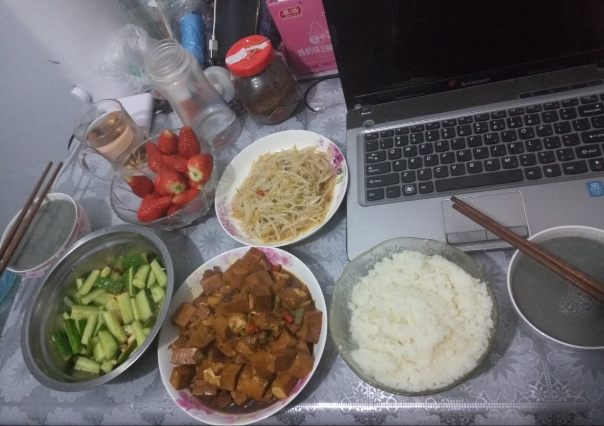

那年,那时,今时,今人
转眼,我们两个相识已近两年,携手也已走过四百天,我最爱的歌宝啊.
宝贝,还记得一起给你过生日吗?很简单,很开心,我给你过得第一个生日.我喜欢你开心的笑,无忧无虑的,呆呆萌萌的样子,好可爱的.嘿嘿,宝宝,你知道吗,你开心笑的样子,烙印在我的心里,脑海里,那样的美,那样的楚楚动人.
咱们之间可能有过,争执,吵闹,不解,委屈,但是,事后回忆想想,都会把我自己逗乐.因为好像每次最后都会"抱头痛哭".两个人一定要把自己和对方都伤害的泪流满面才罢休,~~可是,我们心里清楚彼此深爱着对方,内心最在意对方,最在意对方的回应,一次又一次的"伤害"彼此,却愈来愈深爱彼此!
一吻定情,一念终身
和你在一起的时光,比我自己的几十年的记忆,回忆,都要多,满满的都是你,我觉得等我老了,肯定会坐在摇椅上,慢慢的一滴一滴的回忆咱们的幸福时光.
我和你,相识一眼,定情一吻,相爱一世,执手一生!自从,2016年2月14日,那晚你抓住我的手,我就在心底刻上了你的名字:杨歌!此生,有我握紧你的手,与你一起携手我们的美好一生,无论什么都无法让我松开你的手!我最爱的人,那个傻傻的爱着我的,只属于我的杨歌!
我知道,我的很多缺点,说过很多次了,就是不知道改,我固执,强势,爱钻牛角尖,爱抬杠,自以为是,喜欢强加别人,等等种种,我知道自己的很多毛病,都是你在一次次的忍受我,提醒我,一次次的无论心里多难受都愿意,为我洗衣做饭,这些我都知道,都记得,都,在心里.
没有谁是完人,我的宝宝,也是,只是希望,我的宝宝能够更善解人意一点就好了『其实也有我的原因,我应该慢慢的给老婆说,有时候不能上去就火起来,好好说话,那么大声做什么~~』实际,我也写不出什么我宝宝做的不好的地方,真的很好了,我最爱的歌宝宝.
此生唯爱,唯爱杨歌
致最爱相识相知同相爱,永结同心喜连理,上穷碧落下黄泉,三生三世不负歌.
我们在热恋,在生活,在婚后,无论在什么时候,多少年后,我们都会像现在这样相爱相扶.我们的爱情,是生活平静下的奔腾的熔岩,平静而炙热.我们彼此依然把彼此放进了自己内心得最深处,唯一的地方,不能多,也不能少!
工作,辛苦,劳累,都不重要,一个男人,工作一天回到家中,看到此情此景,真的只有一句:得妻如此,夫复何求!我宝宝对我的好,为我的付出,真的让我很感动,每次,她一个人在家,我心里就很难受,自己在疯狂地假想,她起来了吗?她饿了吗?她吃东西了吗?吃饱了没?有她爱吃的吗?出去冷不冷?风大不大?因为我知道,最爱我的,全心全意全身心的对我好的人是她,我不能让她受一丁点的委屈.不仅因为宝宝对我的好,我爱这个人儿,深爱着她,满心欢喜的爱着她,此爱,千金不换,万年不改!
读《黄磊：我太太这样的女人》有感,写于2017-03-21 15:48